第1课时｜45分钟
女装设计 III · 第15周
第15周｜最终系列编辑与作品集叙事
作品集不是过程仓库，也不是漂亮结果集；它通过选择、顺序、尺度与证据，把设计问题和最终系列组织成一条可复述的论证。
从证据到成衣、从单页到编排：让评审在有限时间内读懂设计逻辑
作品集如何既保留实验复杂性，又让研究、决定、系列和市场定位被迅速读懂？
McQueen · 2026早秋系列同一系列5套｜用于首轮观察
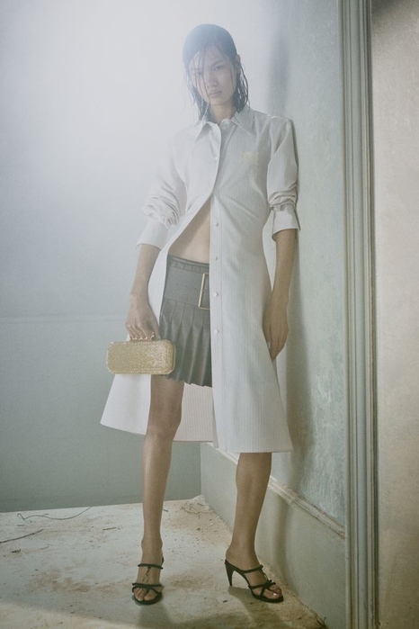
01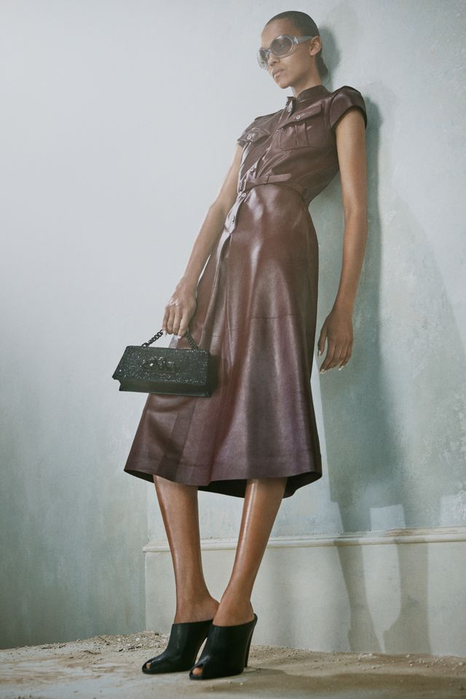
02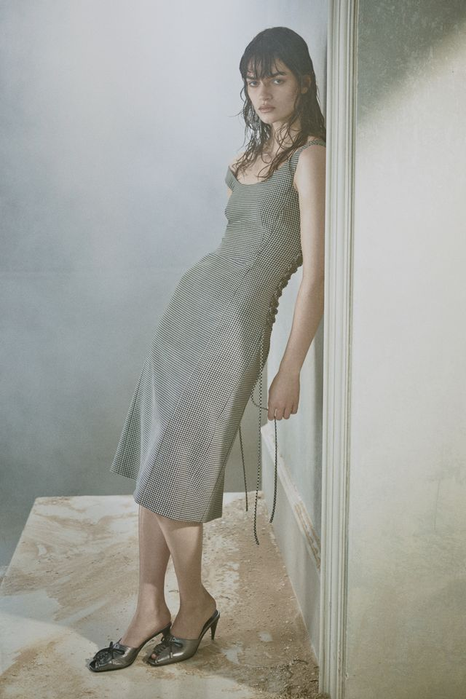
03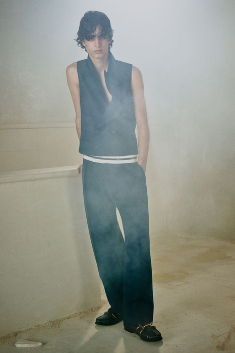
04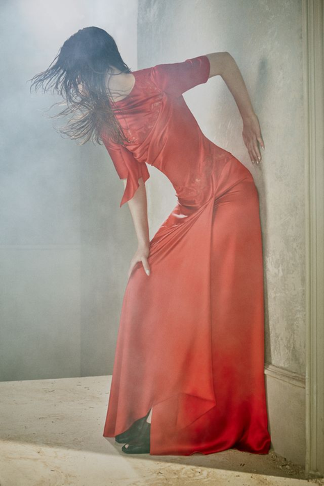
05图像：McQueen 2026早秋系列｜课堂反向分析，不代表品牌官方版型说明。
常量｜同一间空间五张都在同一个褪色房间里拍，光线、地面与姿态语言一致——作品集统一感最省钱的做法。
变量｜强度曲线白色长衬衫外套（01）→ 皮革裙（02）→ 针织吊带（03）→ 背心＋裤（04）→ 垂坠长裙（05），前四套压着，只有最后抬起来。
变量｜色灰、白、深蓝之间；红色整组只出现一次，落在第五套。颜色被当成标点用。
角色｜梯度05 形象款；01·04 引流款；02·03 过渡款。
十六周课程路径女装设计 III · 第15周 · 第1课时｜45分钟
十六周不是孤立主题，而是一条连续的设计证据链
前8周建立方法并完成中期验证；后8周深化春夏与秋冬系列，最终独立完成主题系列与答辩。
01–04判断与定位
05–08提取与验证
09–12季节系列开发
13–16独立项目与考核
已完成本周后续
第1课时｜45分钟
女装设计 III · 第15周
03 学习目标
最终系列编辑与作品集叙事要形成四项可见证据
不是听懂概念，而是让判断进入图、样片、系列编排和编辑记录。
第1课时节奏衔接与目标6′大纲与教材证据5′词汇·模型与案例4′AI表现与院校案例5′实操25′
关键判断
证据到设计的因果叙事；五款系列编排；市场定位；作品集顺序与口头表达。
主要难点
在不牺牲设计深度的情况下删除冗余，并让作品集页面、编排和口头陈述使用同一套判断逻辑。
当周成果
完成可评审的系列板、研究与实验精编页、五款编排、市场定位页和第一次完整答辩排练。
提交要求
提交8—12页精编作品集、五款最终编排、产品角色/市场定位表、3分钟陈述稿与排练修订单。
体例对照本页的“关键判断”即教学重点，“主要难点”即教学难点，“提交要求”即本周提交规格，“当周成果”是它的产出清单。 学情大二，已完成第01—14周，手上有五款修订线稿与关键局部样。
第1课时｜45分钟
女装设计 III · 第15周
第14周→本周
今天不从零开始——上周做完的两样，今天要编进作品集
第14周回答“这些规则经得起实验吗”；本周回答“怎么把它讲清楚，让别人30秒就读懂”。
第14周带来的
本周变成
在哪一页用
五款修订线稿（正背面齐全，标注常量、角色与造型强度）
最终系列板的版面素材——正背比例姿态要统一
第2课时实操
关键局部样（连同正侧背和动作照片）
作品集里唯一的实物证据——它证明你真的做出来过
墙面编辑 / 精编作品集
命题卡上的一句话命题
每页任务句的来源；30秒阅读测试对的就是它
第1课时实操
术语衔接第14周的“关键局部样”在本周仍叫“关键局部样”——它是作品集里唯一的实物证据，缺了它，整本作品集只剩图纸。
开场 2 分钟摊开五款修订线稿与关键局部样的照片 → 挑出局部样拍得最清楚的那一张，它将出现在作品集前三页 → 今天只做编辑与排版，不新增实验。
第1课时｜45分钟
女装设计 III · 第15周
04 大纲对照
本周不是额外内容，而是大纲成果的具体证据
下面五项来自《25级〈女装设计〉课程大纲》与《考核大纲》原文，说明本周的每一项输出将落到哪里、如何计分。
课程目标 2
原文：“培养学生女装产品的设计能力”。
作品集是这条能力唯一能被外人读到的形式。
考核内容｜系列女装设计
三大考核块之一，占比 40%。
五款编排板就是这一块的直接评分对象。
考核内容｜主题设定与元素提炼
作品集的前三页要把它讲完，讲不完就等于没做。
评审平均只花 90 秒看完全部研究页。
平时成绩｜40%
精编页、编排板、定位页与排练录音，本周全部计入。
这是最后一次计平时分的课。
期末实践｜60%
下周按六项标准（10/10/20/20/20/20）现场评分，不再补交材料。
本周交什么，下周就用什么答辩。
第1课时｜45分钟
女装设计 III · 第15周
05 教材证据
一个系列有多少款、什么比例，是算出来的
教材给了一张真实的产品结构表——基本款永远多于形象款，上装是下装的 2–3 倍。
数量关系：夏季 88 款里，基本款 52、形象款 36。你只有五款，但比例逻辑一样——形象款不能超过一半。
换季换的是品类，不是风格：吊带从 7 款降到 0，长袖和卫衣从 0 升到 20，外套从 5 升到 10。品牌没变，产品结构变了。
上装多于下装：因为一条裤子要配好几件上衣。你的五款如果全是连衣裙，产品结构就是不完整的。
观察任务：按这张表的逻辑数一遍你的五款——上装几件、下装几件、形象款几件？比例站得住吗？
来源：于芳《服装设计基础与创意实践》（中国纺织出版社，2023），第122页。图像按教学需要裁切局部，未改变原始比例。
第1课时｜45分钟
女装设计 III · 第15周
06 教材证据
六张照片讲一件衣服，靠的不是六个角度
同一条白裙拍了六张——灯架、背景纸和道具全部留在画面里，这是刻意的选择。
不藏拍摄现场：灯、支架、背景板都露着。整组因此读起来像“记录”而不是“广告”——这正是作品集该有的性质。
每张只承担一件事：站立看整体、坐姿看下摆、俯身看背部、局部看鞋与裤脚。没有一张是重复的。
红色只出现一次：一把红椅、一颗红球。整组靠一个色点串起来，它代替了标题的作用。
观察任务：你的作品集里有几张是“同一个角度再拍一次”？删掉它们，看看还剩几页。
来源：于芳《服装设计基础与创意实践》（中国纺织出版社，2023），第100页，图6-24“无束”（刘斌作品）。图像按教学需要裁切局部，未改变原始比例。
第1课时｜45分钟
女装设计 III · 第15周
07 核心词汇
先建立准确理解，必要的行业术语再保留英文
术语必须能够指导一个动作或判断。
证据链｜Evidence Chain
从研究观察、生成规则、实验决定到最终服装结果的连续因果关系。
页面层级｜Page Hierarchy
通过主图、次图、标注与留白控制阅读顺序和信息强度。
编排节奏｜Line-up Rhythm
五款在轮廓、长度、色量、材料密度、品类和视觉强度上的序列关系。
市场定位｜Market Positioning
由目标人群、场景、价格逻辑、品类角色和竞争参照共同界定的产品坐标。
第1课时｜45分钟
女装设计 III · 第15周
08 概念模型
编辑就是取舍——这四处最容易舍不得
删页比加页难。每一页都要能回答“本页在证明什么”，答不上来就删。
问题 × 篇幅
第一页要在 30 秒内说清研究什么、服务谁。
失败信号：翻到第五页评审还不知道你在做什么。
证据 × 删减
只留改变了判断的过程，其余全部删掉。
失败信号：过程页很多，但删掉任何一页都不影响结论。
决定 × 因果
证据和最终服装要在同页或相邻页看得见联系。
失败信号：研究页和成衣页各自漂亮，中间没有桥。
系列 × 顺序
五款的排列本身要能说明强弱与节奏。
失败信号：随便对调两款，看起来没有任何区别。
第1课时｜45分钟
女装设计 III · 第15周
09 比较判断
作品集最常见的三种错觉——都很努力，但不成立
左边那一项是大多数人交上来的样子。右边才叫编辑。
档案堆积 ≠ 编辑叙事
档案保留所有过程；编辑只保留影响结论的证据，并建立阅读顺序。
检验：随便抽掉一页，结论会不会变？不会变，那一页就该删。
漂亮页面 ≠ 有效页面
漂亮页面可以吸引目光；有效页面必须回答本页在整条论证中的任务。
检验：给这一页写一句“本页必须证明什么”。写不出来，它就是装饰。
款式排列 ≠ 系列编排
排列只是并置图像；编排通过角色、强弱、品类和节奏组织整体。
检验：对调第 1 款和第 5 款。如果毫无区别，说明顺序还没承担意义。
第1课时｜45分钟
女装设计 III · 第15周
10 设计师案例
把最安静的一套放在最后，和放在最前，是两个系列
五套的强度不是随机的。先找出最安静的那一套，再想它为什么排在那儿。
HUI · 2026秋冬成衣同一系列 5套｜看顺序
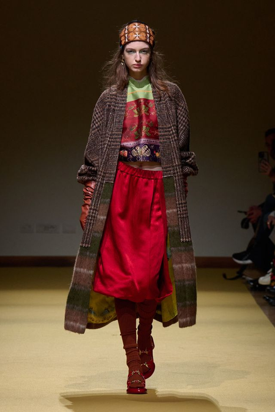
01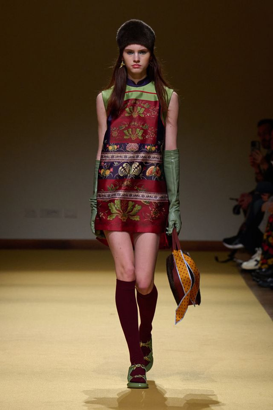
02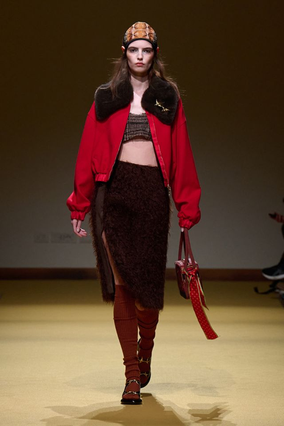
03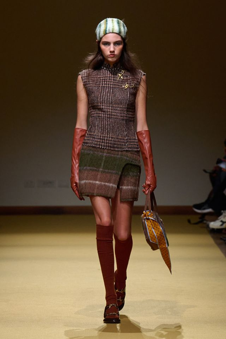
04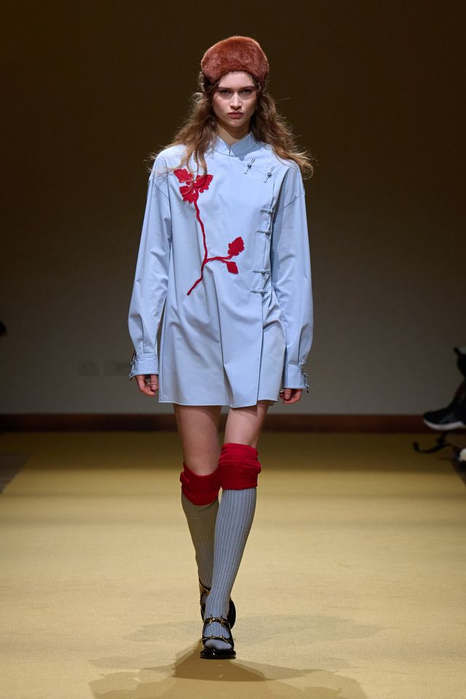
05图像：HUI 2026秋冬成衣｜课堂反向分析，不代表品牌官方版型说明。
常量｜头与脚被锁住五套都有一顶帽子和一双及膝袜。上下两端固定住，中间才敢大幅度变。
变量｜品类组合长外套＋裙（01）→ 连衣裙（02）→ 短夹克＋裙（03）→ 背心＋裙（04）→ 衬衫式连衣裙（05）。
变量｜纹样密度满幅刺绣（02）→ 局部拼接（04）→ 只剩一枝（05），密度一路递减到最后一套。
角色｜梯度02 形象款；01·03 过渡款；04·05 引流款——05 是整组的收束。
课堂回答：05 明显比前四套安静。把它挪到第一位，整组会变成什么样的故事？
第1课时｜45分钟
女装设计 III · 第15周
11 设计师案例
记忆点是一个具体形状，不是一种气质
五套的视觉重心全部落在同一个部位——看得出是哪里吗？
Schiaparelli · 2026秋冬高定同一系列 5套｜看记忆点
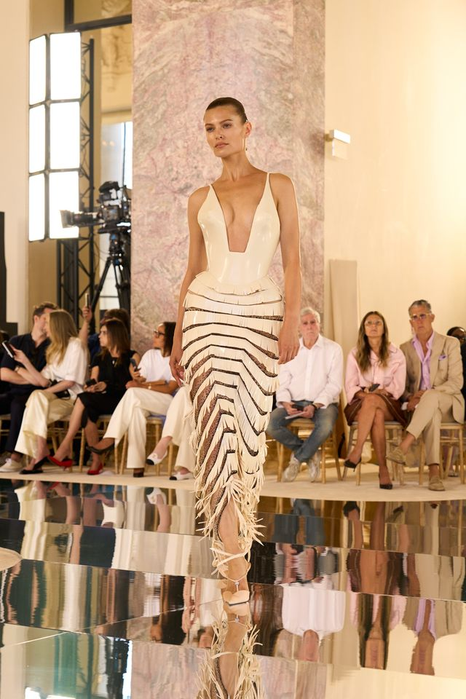
01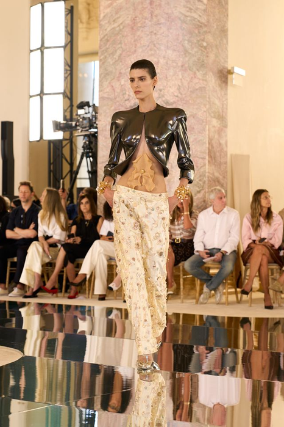
02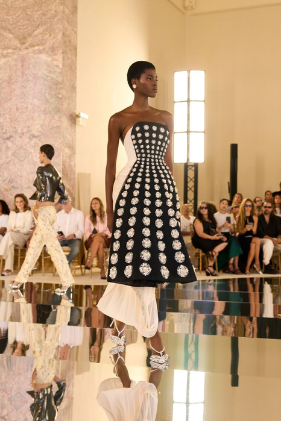
03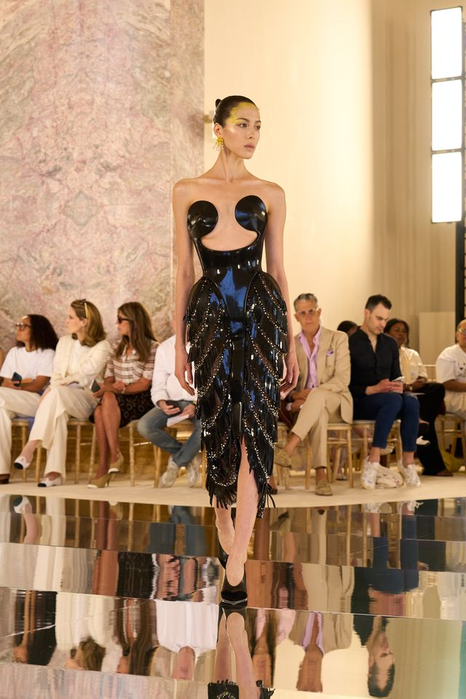
04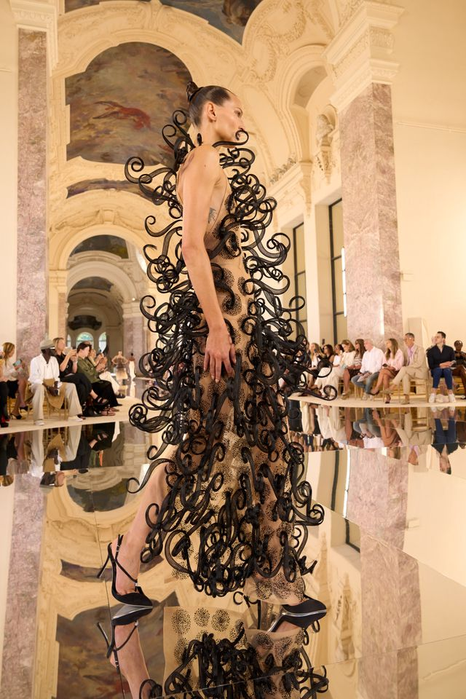
05图像：Schiaparelli 2026秋冬高定｜课堂反向分析，不代表品牌官方版型说明。
常量｜焦点在胸廓五套都把视觉重量压在胸腔位置——用内衣式上身、盔甲、抹胸或立体结构固定。
变量｜材料硬度针织（01）→ 金属（02）→ 珠绣（03·04）→ 铁艺卷曲（05），一套比一套硬。
变量｜下身离体的距离流苏贴身 → 印花长裤 → 圆点大裙 → 流苏 → 完全离开身体的卷曲结构。
角色｜梯度05 形象款（记忆点）；04 核心款；02 过渡款；01·03 引流款。
课堂回答：把 05 放到第一位，后面四套还压得住吗？记忆点放太早，剩下的就都成了余音。
第1课时｜45分钟
女装设计 III · 第15周
AI 表现
把自己的线稿推成效果图：AI 做表现，判断还是你做
期末第④项「系列效果图的整体造型美观」占二十分。这一页解决的就是那二十分。
01
从自己的线稿出发输入必须包含你的 A-0 线稿或立体照片。从零提示词生成的图，不属于你的设计。
02
锁结构，换表现提示词里把结构描述固定下来，只变材质、光线和色彩。结构一变，就不是你的款了。
03
五款统一处理同一组参数跑完五款。参数不统一，五张图会像五个人画的。
04
人工修正收尾比例、接缝位置、开合逻辑必须自己改回来。AI 常把袖窿和门襟画成不可缝的样子。
可以效果图、质感映射、色彩试案、背景与光线。 不可以技术平面图、纸样、白坯样衣、试衣与材料测试——这些必须手工和实物完成。 这条和第01周红绿灯、第02周 A-4 是同一条规则。
第1课时｜45分钟
女装设计 III · 第15周
高校学生案例
院校实例｜《有无相生》：AI 进入流程之后，判断责任反而更重
清华大学美术学院王云锦硕士作品。它公开了 AI 辅助流程图——这不是我们新要求的做法，是已经在发生的做法。
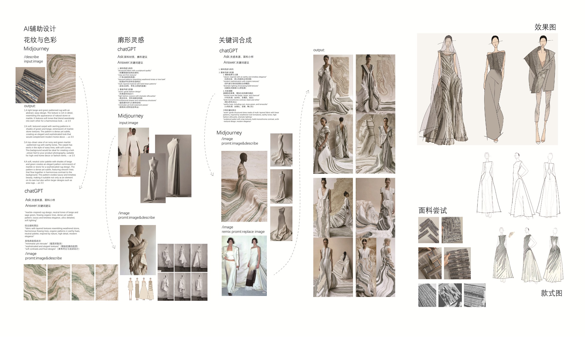
AI 辅助流程与效果图（点击放大）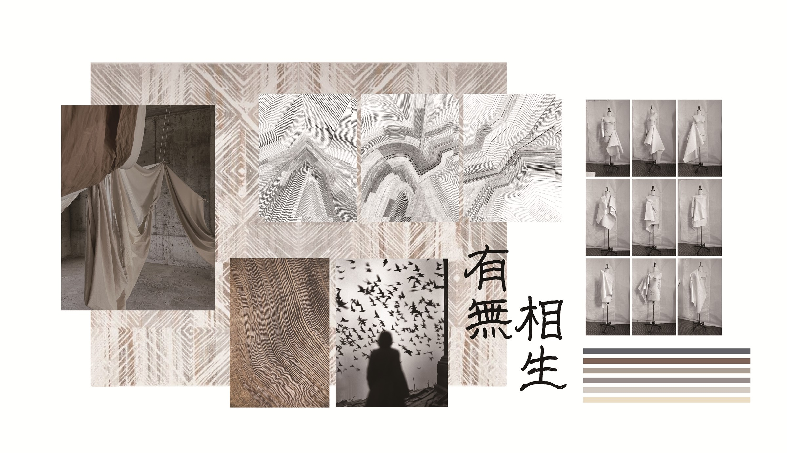
① 灵感与材料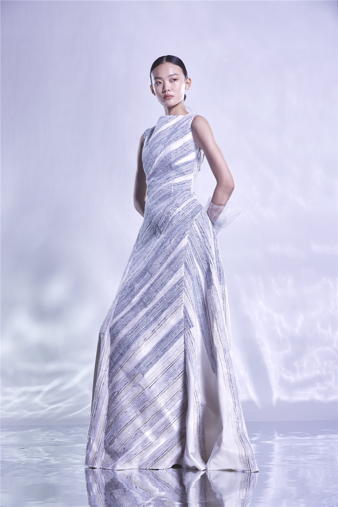
② 成衣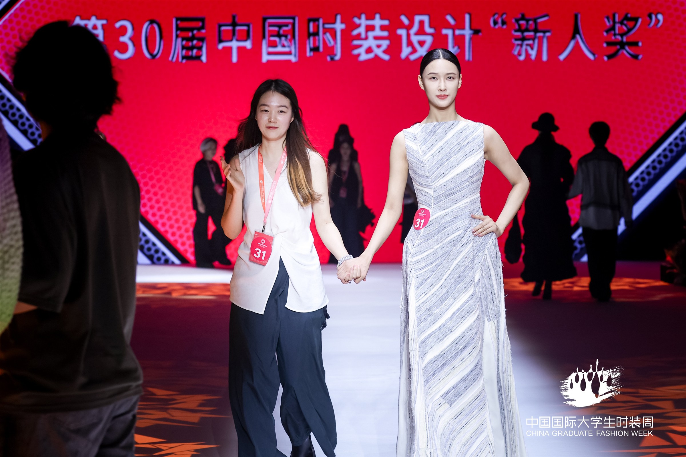
③ 走秀验证AI 在“扩量”这一步它把一个材料原理快速铺成多个视觉方案，缩短的是画图时间，不是判断时间。
判断仍然由人做寄木细工的接合逻辑、废旧面料的来源——这两件事 AI 给不出，只能自己查、自己试。
落地检验没有捷径成衣和走秀说明它做得出来。效果图再完整，做不出来就等于零。
本周规则用 AI 做效果图可以，但必须交 A-0 人工基线、工具名、提示词与修改理由。缺一项，这张图不计分。 图源：王云锦《有无相生》灵感版与 AI 辅助流程图，清华大学美术学院硕士作品公开资料｜仅用于流程观察。
第1课时｜45分钟
女装设计 III · 第15周
纵向案例｜第4格
把复原的规则和真实成衣并排：对得上吗
前两格我们倒推了规则。倒推对不对，要拿实物验一次。这一页把复原图和作者的四套放在一起看。
01 第13周调研主题板
02 第13周抽象结构线
03 第14周展开受控变形
04 第15周表现效果图
05 第16周系列Line-up
 复原的分岔规则
复原的分岔规则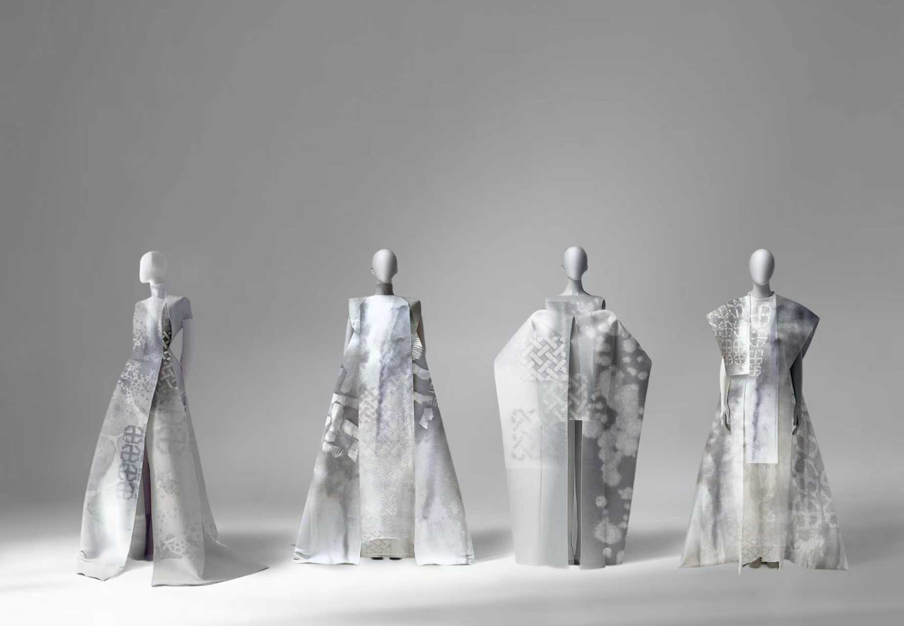
作者的四套成衣对得上的部分四套确实是「同一色域＋不同结构」。左图预测的关系，右图逐条找得到。
对不上的部分复原图把变量排成一条直线，真实作品里几个变量常常同时在动。复原是教学用的简化，不是作品的真相。
对你的意义你做效果图时先按左图那样一次只改一个。等控制得住了，再叠加。这一格直接对应期末第④项二十分。
轮到你把你的五款效果图并排，逐款写一句「这款改的是什么」。写不出的那一款，就是凑数的那一款。 图源：周玉清《一隐一现》公开资料，清华大学美术学院官方公开页面｜仅在公开证据可验证范围内判读，未公开部分不作推断。结构线图与分岔图为逆向复原：依据公开的主题板与最终四套成衣反向推定生成规则，用于课堂教学，不代表作者的原始步骤。
第1课时｜45分钟
女装设计 III · 第15周
12 第1课时检查
28分钟：把概念判断转成第一版可见输出
每个阶段结束都要留下图像、标注或修改记录。
17-23分钟
墙面编辑打印全部页面缩略图，按问题、证据、决定、结果重新排序并删除20%。
23-31分钟
30秒阅读测试同伴只看每页30秒，写下理解内容；与页面任务句逐页比对。
31-39分钟
证据到服装选择三款建立原始资料—实验—技术决定—最终结构的四格链。
39-45分钟
编排诊断转成黑色剪影，先修比例、长度和节奏，再恢复色彩与材料。
交接第2课时：带着精编页与编排诊断结果进入市场定位与答辩排练。没有对应证据的页面，先删再排。
第2课时｜45分钟
女装设计 III · 第15周
第2课时｜45分钟
从判断进入制作、编辑与反馈
第1课时完成了精编与编排诊断；第2课时把它转成市场定位页与三分钟陈述。
方法与实验9′ → AI记录表2′ → 实操26′ → 讲评与评价5′ → 预告与收尾3′
第2课时｜45分钟
女装设计 III · 第15周
14 操作动词
用八个动作推进设计，不用空泛形容词
每个动作都必须产生可比较的前后版本。
01
页面任务句为每页先写一句‘本页必须证明什么’，再决定图像与文字。
02
证据删减删除不能改变判断、重复同一信息或缺少来源的过程图。
03
前后配对把原始证据、实验变量和对应最终结构并置，形成可见因果。
04
主次定标每页只设一个主证据，其余图片服务比较、细节或来源说明。
05
编排排序用缩略轮廓先排强弱与长度，再加入色量、材料和造型信息。
06
产品角色标注为每款标明入口、核心、连接、商业或实验角色及相邻搭配。
07
市场校准用目标人群、场景、品类、价格逻辑和三项竞争参照检查定位。
08
口头压缩把陈述压缩为问题、证据、决定、系列价值四段，每段不超过40秒。
第2课时｜45分钟
女装设计 III · 第15周
15 变量矩阵
先控制变量，再判断哪一种变化真正有效
矩阵用来生成与比较，不要求把所有组合都做成最终款。
| 编辑维度 | A | B | C | D |
|---|
| 页面角色 | 提出问题 | 展示证据 | 解释决定 | 呈现结果 |
| 图像尺度 | 全页主图 | 半页对照 | 四格过程 | 局部放大 |
| 编排角色 | 入口 | 连接 | 核心 | 收束 |
| 产品信息 | 顾客 | 场景 | 品类 | 价格逻辑 |
| 答辩证据 | 研究来源 | 实验比较 | 技术实现 | 市场合理性 |
怎么用：先给每一页选定“页面角色”，其余三行跟着它定。一页只能有一个角色。
覆盖要求：8–12 页里，“提出问题”和“解释决定”各至少一页——最常被漏掉的就是这两类。
无效组合：“提出问题 × 局部放大”“呈现结果 × 四格过程”——页面角色和图像尺度必须匹配。
第2课时｜45分钟
女装设计 III · 第15周
16 受控实验
一次只改变一个主变量，保留可追踪依据
基准型与V1-V3必须使用相同视角、比例和标注方式。
基准型｜完整档案
将全部资料按时间排列，记录总页数、重复信息与三个主要阅读断点。
记录格式：缩略图墙拍一张全景，写下总页数、重复信息的页码和三个阅读断点。
V1｜证据链排序
只改变页面顺序，以问题—证据—决定—结果组织，测试他人能否复述。
记录格式：两版缩略图墙并排拍照；请同伴看完后复述一遍，把复述内容原话记下来。
V2｜视觉层级
顺序不变，只调整主图尺度、对照图和标注，测试30秒阅读准确率。
记录格式：同一页的两个版本并排；记录同伴 30 秒后写下的理解，逐字对照页面任务句。
V3｜编排节奏
款式不变，只重排五款顺序，比较开场强度、过渡和收束是否清楚。
记录格式：两版顺序都转成黑色剪影并排，标出开场、转折、收束各落在第几款。
第2课时｜45分钟
女装设计 III · 第15周
17 系列应用
五个位置，五种任务——没有一款是来凑数的
答辩时评审会问“为什么是这五款”。这一页就是答案的格式。
造型 01｜视觉入口
第一眼声明系列的轮廓与态度，不必承担全部技术信息。
造型 02｜产品连接
用可穿品类和较低强度，把概念和市场接上。
造型 03｜论证核心
最完整地连接研究证据、结构实验、材料决定与最终效果。
造型 04｜跨度证明
用一个明显不同的品类，证明规则不是只适合前三款。
造型 05｜记忆收束
集中关键色彩或材料动作，给整组一个清楚的结尾。
检查：逐款问一句“删掉它，系列少了哪一项任务”。答不出来的那一款，就是凑数的。
第2课时｜45分钟
女装设计 III · 第15周
AI 使用记录表
每一张进入评审的生成图，都要能回答这六栏
记录不是行政手续。它证明这张图是你的判断，而不是工具的输出。
| 栏目 | 要写什么 | 不合格的样子 |
|---|
| ① A-0 人工基线 | 生成之前你自己的线稿或立体照片，注明完成时间 | 没有 A-0，或时间在生成之后 |
| ② 工具与版本 | 工具名与版本（如即梦／可灵／FLUX／Midjourney） | 只写“用了AI” |
| ③ 提示词 | 完整提示词，含否定词；种子号若有一并记 | 凭记忆复述 |
| ④ 生成结果 | 保留被淘汰的版本，不只交最终一张 | 只交一张成品 |
| ⑤ 人工修正 | 你改了哪里、为什么改（比例／接缝／开合） | 写“微调” |
| ⑥ 责任声明 | 哪些部分由 AI 生成、哪些由你完成 | 不写 |
缺任意一栏，这张图不计入期末第④项。 为什么这样要求第13页那件清华硕士作品公开了自己的 AI 流程图——行业里已经这样做了，写清楚反而是专业能力的一部分。
第2课时｜45分钟
女装设计 III · 第15周
19 第2课时实操
28分钟：完成实验、编辑、同伴反馈与锁定
最后5分钟必须写下下一步动作，不能只停留在讨论。
14-20分钟
市场定位页完成顾客、场景、品类组合、价格逻辑和竞争参照的单页坐标。
20-28分钟
最终系列板统一正背、比例、姿态和标注，显示五款角色与搭配关系。
28-36分钟
三分钟排练无附加解释完成问题、证据、决定和价值四段陈述，录音计时。
36-42分钟
反问演练回答‘为什么是女装、为何现在、为何这组材料、谁会穿、为何五款成立’。
交接第16周：精编作品集、五款编排与陈述稿，就是期末答辩的提交物。排练中答不出的问题，先补证据再上场。
第2课时｜45分钟
女装设计 III · 第15周
20 提交证据
提交板面必须让评审者快速找到四类证据
这四件就是期末答辩的提交物。第16周不再有补交机会。
8—12页精编作品集
含研究、命题、实验、决定、技术和最终系列，所有来源与图注完整。
不合格：超过 12 页；或有页面写不出“本页证明什么”；或图注、来源缺失。
五款最终编排板
统一比例的正背图、产品角色、主面料、色彩面积和搭配顺序。
不合格：正背图比例或姿态不统一，五款没法并排比较。
市场与产品定位页
目标顾客、穿着场景、品类组合、价格逻辑及3项竞争参照。
不合格：价格逻辑写不出依据；或三项竞争参照里有两项其实不同赛道。
答辩排练包
3分钟陈述稿、5个高频问题、录音或录像、修订清单。
不合格：没有计时录音——不计时的排练，上场必超时。
第2课时｜45分钟
女装设计 III · 第15周
21 同伴讲评
反馈只使用“证据—判断—动作”
禁止只说好看、不好看、再丰富一点。
证据
你的判断在图、样片或系列编排的哪里？
本周指向：指出是第几页、页面上的哪个位置，不能只说“作品集感觉不清楚”。
因果
这个形式为何回应主题、身体或市场条件？
本周指向：说明这一页承担的是提出问题、给证据、解释决定还是呈现结果。
取舍
应该保留、删除、替换还是补位？
本周指向：这一页删掉，结论会不会变？不会变就直说该删。
行动
下一版具体改变哪个变量，如何验证？
本周指向：指定要调整的是顺序、尺度还是删页——三选一，不要一起提。
第2课时｜45分钟
女装设计 III · 第15周
22 形成性评价
第15周检查：本周成果是否允许进入下一阶段
标记为“成立 / 部分成立 / 需重做”，并写下证据位置。任何一项被判“需重做”，本周都不算通过——下周没有补救时间。
叙事逻辑 · 25%
问题、证据、决定和最终系列形成清楚因果。
视觉编辑 · 20%
页面主次、图像尺度、文字密度和顺序服务阅读。
系列编排 · 20%
五款在统一、差异、品类和强弱节奏上完整。
市场定位 · 20%
顾客、场景、产品与价格逻辑由研究支持。
答辩准备 · 15%
陈述准确、限时，能以可见证据回应问题。
判定线：“成立”＝评审能自己找到证据；“部分成立”＝要你解释才找得到；“需重做”＝解释了也找不到。
本周特殊：任何一项被判“需重做”，下周都没有补救时间——今天就要现场改，不要带回去。
第2课时｜45分钟
女装设计 III · 第15周
23 下周准备
第16周就是期末考核：答辩、批评与反思
下周不再修改作品。本周交出去的东西，就是最终评分的对象。
带上｜精编作品集
8–12 页，打印或电子版按考场要求准备，页序不再变动。
现场临时抽页会打乱你排练好的叙事。
带上｜五款编排板与陈述稿
3分钟稿子背到能脱稿说，但纸稿仍要带在手边。
超时会被打断，压缩到 2分40秒最稳。
准备｜五个高频问题的答案
为什么是女装、为何是现在、为何这组材料、谁会穿、五款为何成立。
每个答案都要能指向作品集里的某一页。
写下｜一句反思
“这学期我最大的判断失误是______”，用于第16周的反思环节。
这一句也计入成绩，且答不出“没有失误”。
第2课时｜45分钟
女装设计 III · 第15周
一句话小结：把本周判断写成下一步动作
“我保留 ______，因为证据是 ______；我删除或修改 ______，下一周将用 ______ 验证。”
01作品集编辑的核心是选择与顺序，不是增加页数。
02每个最终服装都应能追溯到研究证据、生成规则和实验决定。
03编排先处理轮廓与角色，再处理色彩、材料和造型细节。
04市场定位不是限制创意，而是让设计价值拥有明确对象和现实坐标。
课后查阅｜教学补充
女装设计 III · 第15周
期末评价连接
本周成果将进入同一套六项终期评价
平时训练不是零散作业，而是期末系列的证据积累。
10分
时代性与创意
主题回应当下，并形成自己的问题与立场。
10分
趋势性与元素
提炼的设计元素与当季趋势、审美和来源一致。
20分
当代女性适配
款式回应身体、动作、场景与真实穿着需求。
20分
整体造型美感
比例、色彩、材料与细节共同形成完整造型。
20分
市场与定位
顾客、价格、品类和使用情境边界清楚。
20分
统一与丰富
风格统一，同时具有角色、搭配与造型变化。